sdmApp is an R package containing a Shiny application that lets non-expert R users model species distribution. It brings a reproducible workflow for species distribution modeling into a single, user friendly environment. sdmApp takes raster data (in any format supported by the raster package) and species occurrence data (several formats supported) as input, and provides an interactive graphical user interface (GUI).
CRAN status
sdmApp is not currently available on CRAN. It was archived on 2024-02-10 because check problems were not corrected in time, following an earlier archival on 2021-07-06 caused by its dependency on CENFA, which had itself been archived.
Install from GitHub instead (see below). Work to return the package to CRAN is tracked in the issue queue: the main blockers were the retirement of rgdal and rgeos in October 2023 and the archival of CENFA in July 2023.
Main features
- Upload data (raster predictors and species occurrence files)
- View the correlation between raster predictors
- Use CENFA to select species predictors
- Apply spatial blocking for cross-validation based on the blockCV package
- Fit species distribution models with or without a spatial blocking strategy
- Export results
- Stay reproducible by downloading the underlying R code from
sdmApp
The GUI is built around five main windows, selectable from the navigation bar at the top of the screen. Some of these windows start empty and fill in once raster and species occurrence data have been uploaded.
Installation
System requirements
sdmApp exposes the MaxEnt model, which uses a Java implementation. To use MaxEnt you need:
- the Java JDK (>= 8) installed;
- the rJava package installed;
- the maxent.jar file copied into the correct folder, that is the
javadirectory of thedismopackage. You can locate it withsystem.file("java", package = "dismo").
Everything else in sdmApp works without Java.
Install the package
# install.packages("remotes")
# CENFA is not on CRAN and must be installed from GitHub first
remotes::install_github("rinnan/CENFA")
# then sdmApp itself
remotes::install_github("Abson-dev/sdmApp", dependencies = TRUE)Then launch the interface:
sdmApp() checks at launch that the modelling engines it needs are installed, and stops with a message naming any that are missing, so you never get a cryptic error halfway through a session.
Quick start without the GUI
The package also exports a small set of mapping helpers that you can use directly in a script. They all work on the example data shipped with the package.
library(sdmApp)
# a continuous predictor: actual evapotranspiration and interception
r <- raster::raster(system.file("extdata", "AETI.tif", package = "sdmApp"))
sdmApp_RasterPlot(r)
# a presence/absence surface
pa <- r > 4000
sdmApp_PA(pa)
# mask a probability surface by a presence/absence surface
prob <- r / raster::cellStats(r, "max")
names(prob) <- "probability of occurrence"
sdmApp_RasterPlot(sdmApp_TimesRasters(prob, pa))See vignette("sdmApp") for a longer walkthrough.
Example data
The package ships a small extract of the Niakhar study area in Senegal, in inst/extdata:
-
Niakhar.csv(and the same table as.xlsx,.dta,.sav,.sas7bdat), holding 9258 georeferenced trees scored for three species (Faidherbia albida, Balanites aegyptiaca and Anogeissus leiocarpus); - 34 raster predictors covering bioclimatic drivers, soil properties, water productivity, vegetation phenology and productivity, and watershed topography.
The bundled rasters are aligned on a common grid of 93 by 91 cells in geographic coordinates (EPSG:4326). Note that Niakhar.csv is semicolon separated and uses a comma as decimal mark, so read it with read.csv2() rather than read.csv().
The graphical interface
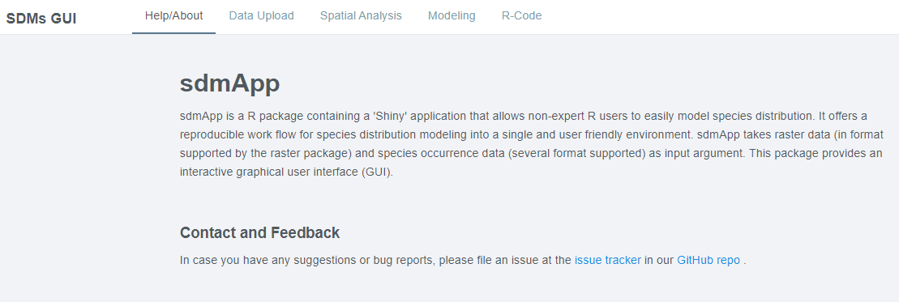
The five tabs are Help/About, Data Upload, Spatial Analysis, Modeling and R-Code. The screenshots below follow a typical session, from uploading data through to exporting results and recovering the generated R code.
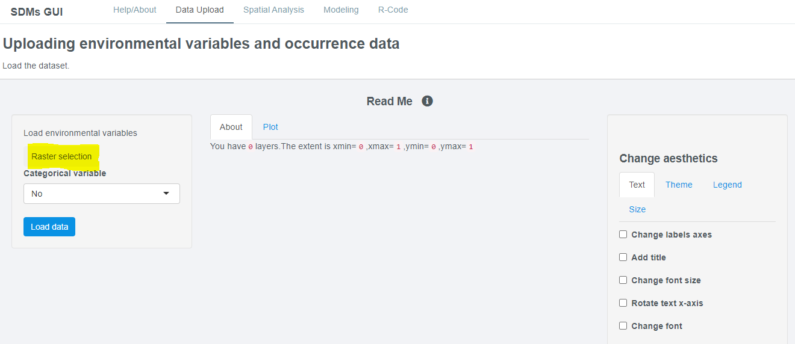
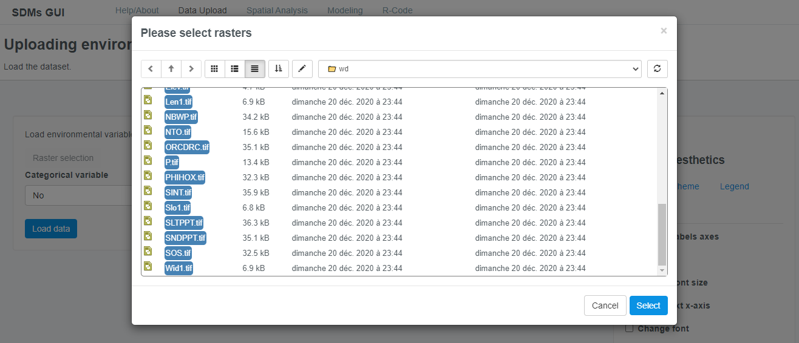
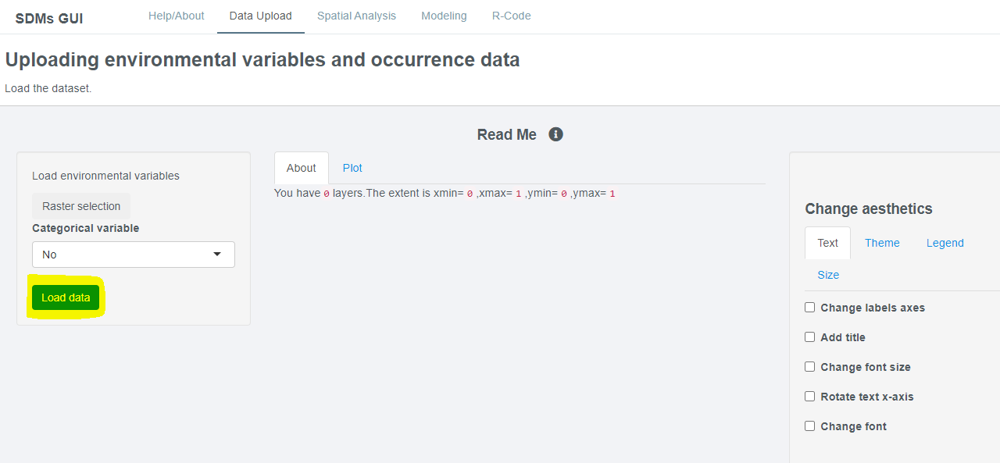
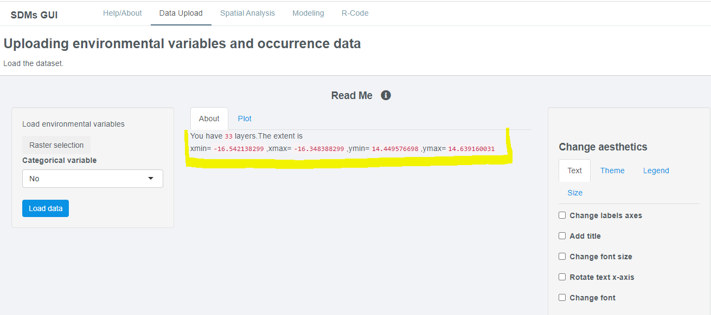
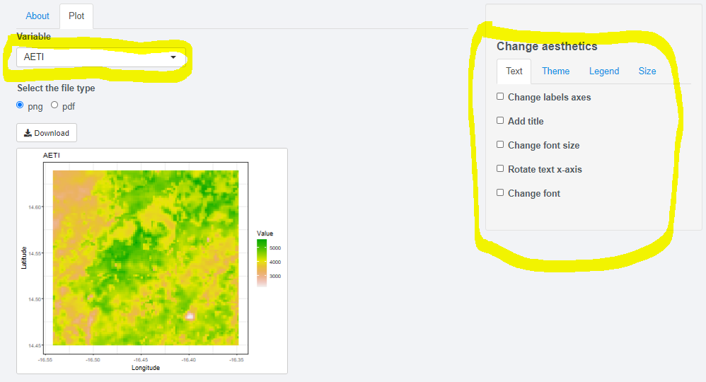
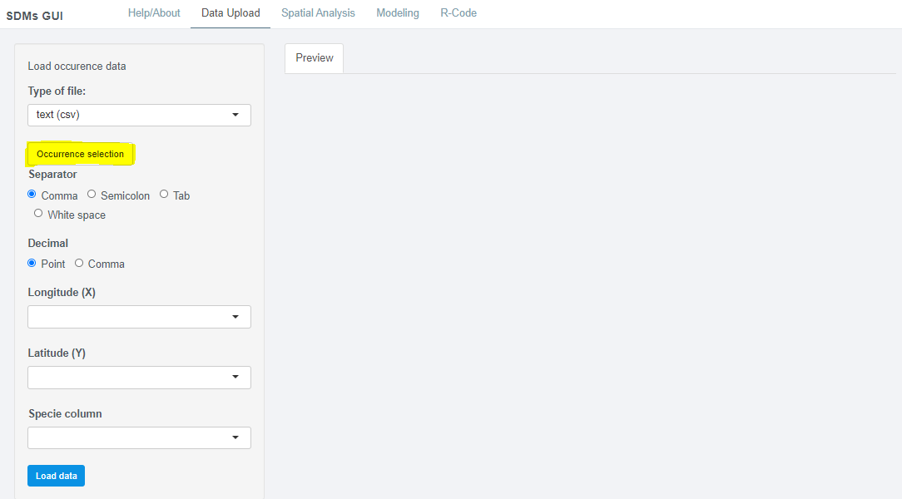
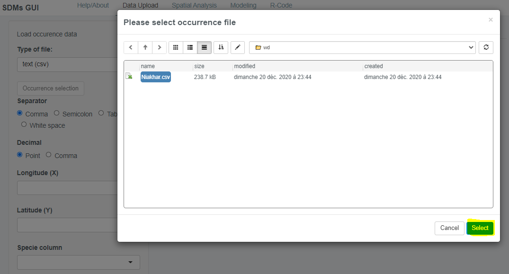
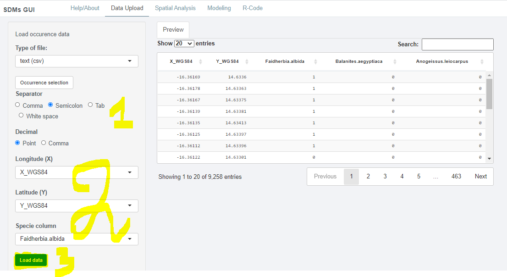
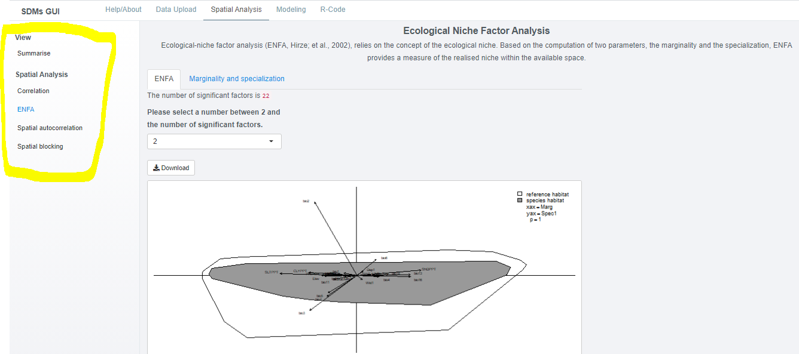
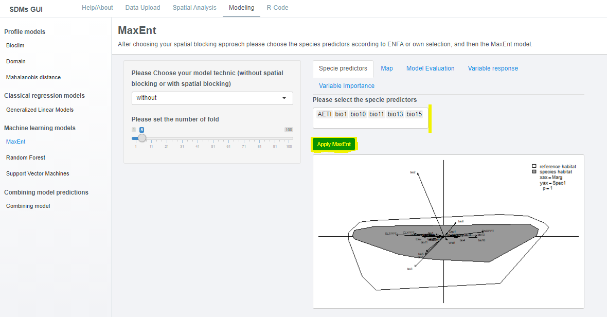
Known compatibility notes
-
blockCV 3.0 and later.
spatialBlock()is deprecated in favour ofcv_spatial(), and the returned object is no longer of classSpatialBlock.sdmApp_fold_Explorer()currently expects aSpatialBlockobject, so it works with the deprecatedspatialBlock()but not yet withcv_spatial(). Support for the new class is planned. -
rgdal and rgeos. Both were archived from CRAN on 2023-10-16.
sdmAppno longer depends on them; recentrasterreaches GDAL, GEOS and PROJ throughterra. -
raster and sp. These still work but are in maintenance mode. A migration of the mapping helpers to
terraandsfis planned.
Citation
citation("sdmApp")To cite sdmApp in publications, use:
HEMA A, NDAO B, LEROUX L, DIOUF A (2026). sdmApp: A User-Friendly Application for Species Distribution Modeling. R package version 0.0.3, https://github.com/Abson-dev/sdmApp.
A BibTeX entry for LaTeX users is:
License
sdmApp is released under the GPL-3 license.
The sdmApp sticker was made through R art kindly shared at art.djnavarro.net and released under a CC-BY-SA 4.0 license.
Guidelines for contributing
Contributions and suggestions for improving this package are welcome. Please do not hesitate to open an issue for any problem you encounter, or a pull request for any improvement you would like to propose.
References
Ndao, B., Leroux, L., Diouf, A.A., Soti, V., Sambou, B. (2019). A remote sensing based approach for optimizing sampling strategies in crop monitoring and crop yield estimation studies. In: Wade, S. (Ed.), Earth Observations and Geospatial Science in Service of Sustainable Development Goals. Springer, pp. 25-36. doi:10.1007/978-3-030-16016-6_3
Rinnan, D.S., Lawler, J. (2019). Climate-niche factor analysis: a spatial approach to quantifying species vulnerability to climate change. Ecography, 42, 1494-1503. doi:10.1111/ecog.03937
Valavi, R., Elith, J., Lahoz-Monfort, J.J., Guillera-Arroita, G. (2019). blockCV: An R package for generating spatially or environmentally separated folds for k-fold cross-validation of species distribution models. Methods in Ecology and Evolution, 10, 225-232. doi:10.1111/2041-210X.13107